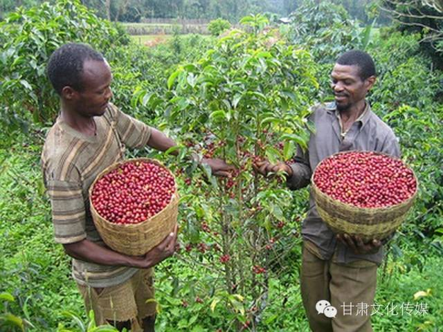
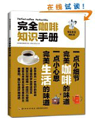

咖啡如何改变世界
发布时间:2015-04-25
咖啡，以热饮的形式，溶进它所生长的土壤条件、果实的烘焙程度；人们饮用咖啡，享受它苦中有甜的芬芳、激活思维的助推性、促进交往的粘合剂。
咖啡作为世界上最受欢迎的醒脑药物，不论从其精细的准备工序，还是其不为人知的历史，都在文化上拥有磁石般强大的吸引力。或许美国人需要一位建国之父来教他们如何制作咖啡，直到马克·潘德格拉斯特1999年出版了《非比寻常的：咖啡的历史以及咖啡如此转变我们的世界（共同图书馆）》，咖啡丰富的历史遗产、人类学才开始全面繁盛起来。
在最新发行的更新版本中，潘德格拉斯特为发生在位于海拔4500英尺的危地马拉咖啡种植园的故事描绘了一副美丽的背景：
我在嘴里磕开一个成熟咖啡果的果荚，尝到其中的甘甜黏液。舌头要花一点儿功夫才能把保护豆胚的粗糙果皮去掉。咖啡豆和花生一样，通常一果双仁。吐掉果皮后，我终于得到了两颗豆子。豆子的外面包裹一层细密半透明的银皮。在有些地方，土壤里缺乏足量的硼，我就有可能发现单粒的果仁，人们将之称为花生莓。有些人认为花生莓的味道稍加浓郁。我吐出了果仁。它们太硬了，很难嚼。
我听到别的收获者们一整家子一整家子地说着西班牙语聊着天、唱着歌。这是一个快乐的时节。一年辛苦地劳作——修剪、施肥、除草、培土，以及修整马路和水管，统统归结为咖啡豆的成熟。我唱起了一支含有几句西班牙语的歌谣：我亲爱的花。
上一篇：十二星座专属咖啡，看看是你的菜吗？下一篇： 世界咖啡之旅（2）摩卡的国度——也门
咖啡杂志

中国咖啡网杂志_1期